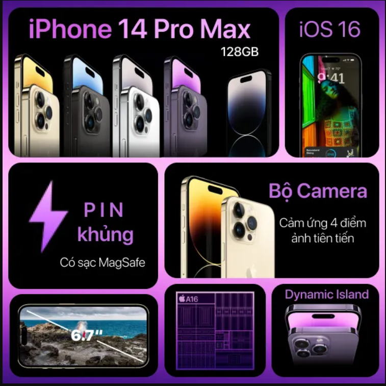

Iphone 14 Promax
1.Tổng quan về Iphone 14 Promax
1.1Giới Thiệu Tổng Quan
iPhone 14 Pro Max là mẫu flagship cao cấp sở hữu thiết kế viền thép sang trọng cùng màn hình lớn 6.7 inch (120Hz) siêu mượt, nổi bật với cụm Dynamic Island tiện ích. Máy mang lại trải nghiệm toàn diện nhờ hiệu năng mạnh mẽ từ chip A16 Bionic, thời lượng pin bền bỉ cả ngày và hệ thống camera 48MP chụp ảnh, quay video cực kỳ sắc nét; điểm hạn chế nhỏ chỉ nằm ở trọng lượng khá đầm tay (240g) và vẫn sử dụng cổng sạc Lightning truyền thống.
1.2Mục Đích Sử Dụng
Apple iPhone 14 Pro Max phục vụ toàn diện từ giải trí, nhiếp ảnh chuyên nghiệp đến xử lý công việc hiệu năng cao. Apple iPhone 14 Pro Max là thiết bị cao cấp phục vụ đa dạng nhu cầu: từ chụp ảnh và quay video chuyên nghiệp (nhờ cảm biến 48MP và khả năng chống rung Action Mode), chơi game đồ họa nặng mượt mà với chip A16 Bionic, cho đến xử lý công việc, đa nhiệm và giải trí xem phim đỉnh cao trên màn hình lớn 6.7 inch sắc nét với thời lượng pin bền bỉ cả ngày.
2.Hình Ảnh Minh Họa Iphone 14 Promax


3.Các Tính Năng Nổi Bật
- Dynamic Island:Vùng tương tác thông minh thay thế cụm tai thỏ cũ bằng thiết kế dạng viên thuốc có khả năng co giãn linh hoạt, hiển thị thông báo, hẹn giờ và điều khiển ứng dụng trực tiếp.
- Màn hình Always-On Display & Độ sáng 2000 nits: Màn hình 6.7 inch OLED 120Hz hỗ trợ luôn bật ở tần số 1Hz để xem giờ/widget nhanh, cùng độ sáng ngoài trời vượt trội đạt tối đa 2.000 nits.
- Camera chính nâng cấp 48MP: Cảm biến độ phân giải cao hỗ trợ chụp chi tiết với định dạng ProRAW 48MP và cải thiện rõ rệt khả năng chụp đêm.
- Quay video Action Mode & Cinematic 4K: Chống rung chuyển động siêu mượt mà không cần gimbal và hỗ trợ quay phim xóa phông chuẩn 4K HDR.
- Hiệu năng từ chip Apple A16 Bionic: Tiến trình 4nm mang lại tốc độ xử lý nhanh, mượt mà mọi tác vụ đồ họa và tối ưu năng lượng hiệu quả.
- Thời lượng pin bền bỉ cả ngày:Viên pin dung lượng lớn 4.323 mAh đáp ứng tốt nhu cầu làm việc, giải trí liên tục trong ngày dài.
| Hạng Mục | Thông Số Kĩ Thuật | Điểm Nổi Bật |
|---|---|---|
| Màn hình | 6.7 inch, Super Retina XDR OLED, 120Hz | Hỗ trợ Dynamic Island và Always-On Display, độ sáng 2.000 nits |
| Hiệu năng & Pin | Chip Apple A16 Bionic (4nm), Pin 4.323 mAh | Xử lý mượt mà tác vụ nặng, thời lượng pin sử dụng cả ngày |
| Hệ thống Camera | Chính 48MP + Siêu rộng 12MP + Tele 12MP (zoom 3x) | Chụp ảnh ProRAW 48MP, quay video Action Mode & Cinematic 4K |
4.Ưu Điểm và Hạn Chế
ƯU ĐIỂM
- Màn hình Dynamic Island và hiển thị đỉnh cao: Tấm nền 6.7 inch OLED 120Hz cực kỳ mượt mà, độ sáng ngoài trời đạt đỉnh 2.000 nits giúp nhìn rõ dưới nắng gắt cùng cụm đảo tương tác thông minh tiện lợi.
- Hệ thống camera 48MP chất lượng cao: Khả năng thu sáng vượt trội, chụp ảnh chi tiết cao với chế độ ProRAW 48MP và quay video chống rung Action Mode mượt mà không cần gimbal.
- Hiệu năng mạnh mẽ cùng thời lượng pin bền bỉ: Chip A16 Bionic cân tốt mọi tác vụ nặng, kết hợp viên pin lớn cho thời gian sử dụng thoải mái trọn vẹn cả ngày dài.
HẠN CHẾ
- Trọng lượng nặng và thiết kế cấn tay: Máy nặng tới 240g kết hợp cùng khung viền thép vuông vức, khiến việc cầm nắm sử dụng liên tục bằng một tay dễ gây mỏi cổ tay và bất tiện khi đút túi quần.
- Vẫn sử dụng cổng Lightning và tốc độ sạc chưa cao: Chưa được đổi sang chuẩn USB-C phổ biến, tốc độ truyền file lớn qua dây khá chậm và thời gian sạc đầy pin mất từ 1.5 đến 2 giờ.